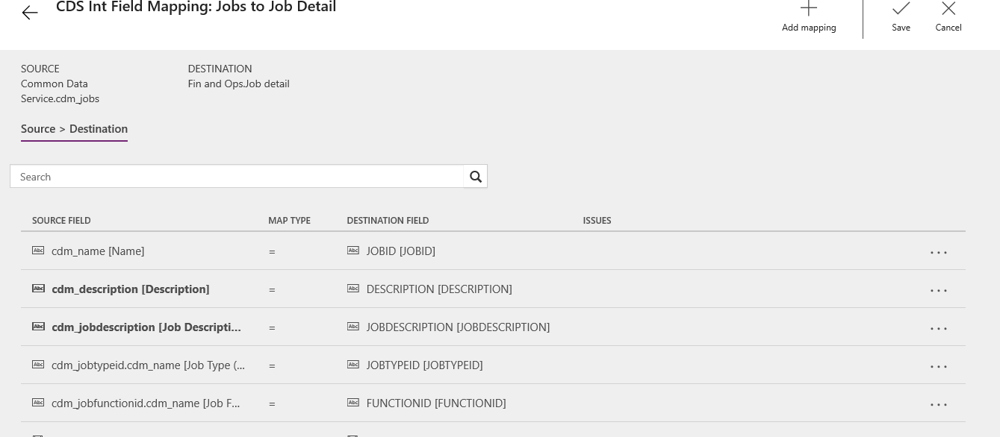

Neuerungen oder Änderungen in Dynamics 365 Talent – Core HR (14. Dezember 2018)
[!include[rename-banner](~/includes/cc-data-platform-banner.md)]Build 8.1.2085
In diesem Thema werden die Funktionen beschrieben, die in Core HR entweder neu oder geändert sind.
Änderungen
USA - ACA (Affordable Care Act) Unterstützung für Steuerjahr2018 Formulare 1095-B und 1095-C
Jedes Jahr müssen entsprechende große Arbeitgeber (ALEs) allen Vollzeitmitarbeitern ein 1095-C bereitstellen. Darüber hinaus, muss der Arbeitgeber, wenn er eine eigenversicherte Deckung ereitstellt, das 1095-C (wenn sie ein ALE sind) und das 1095-B (wenn sei ein kleiner Arbeitgeber sind), für alle Voll- und Teilzeitmitarbeiter bereitstellen, di von diesem Gesundheitsplan gedeckt sind. Diese Funktion bietet druckbare Formulare für das 1095-C und 1095-B.
Beim Import wir das Feld SubmittedByPersonId auf HcmPerfJournalEntity ignoriert
Wenn Leistungsjournaleinträge importiert/exportiert werden, wird das Feld Übermittelt von ignoriert. Mit dieser Änderung bezeichnet der Wert den Wert Importieren/Exportieren in der Tabelle beim Export, sofern das System aktualisiert wird mit dem Wert importiert, der in der Importdatei angegeben wird.
Analyseregisterkarte auf dem "Urlaub- und Abwesenheits" Arbeitsbereich zeigt Fehler " OpenConnectionError "für Nicht-System Administratorrollen an
Mit dieser Aktualisierung werden keine Fehler ausgegeben, wenn die Registerkarte Analyse auf dem Arbeitsbereich Ein Sonderurlaub und Abwesenheit geöffnet wird.
Mitarbeiter-Self-Service, Positions-Hierarchie Drop-Down von der Kachel kann übergeordneten Knoten nicht abrufen
Eine Änderung wurde vorgenommen, um den Fehler zu beheben, der den verlassenen übergeordneten Knoten abruft, wenn die Positionshierarchie personalisiert wurde, um auf einem vorhandenen Arbeitsbereich angezeigt zu werden und eine Position in der Hierarchie auszuwählen.
Hierbei muss der System-Administrator die Lohnregisterkarte in der Positionsseite sehen
Eine Änderung wurde vorgenommen, um die richtigen Sicherheitselemente im vorhandenen Recht einzubeziehen: "Verwalten von Lohnarbeitskraft und Positionsdetail". Mit dieser Änderung hat der Lohn-Administrator standardmäßig Zugriff auf Lohnfeldern auf der Positionsseite.
Fehler, wenn Leistungsbeurteilung zum Manager und dem %Reviews.PerfPeriod% Platzhalter übermittelt wird in den Unterordnungsanweisungen
Eine Änderung wird vorgenommen, die den "NULL-Verweis" Fehler behebt, der beim Berechnen des %Reviews.PerfPeriod% Platzhalter in den Unterordnungsanweisungen verwendet wurde.
Belegschafts-Power BI Bericht zeigt den Fehler, wenn Arbeitskraftdienstalterdatum ein Schalttag ist
Mit dieser Änderung werden Schalttage nun Power BI unterstützt.
Integration zwischen Core HR und Atract
Eine Änderung wird vorgenommen, um die Integration zwischen Core HR und Attract im Bezug zu Kandidaten, die angestellt werden, zu aktualisieren. Damit angestellte Kandidaten im Personalführung Arbeitsbereich angezeigt werden, werden die folgenden Common Data Service Entitäten verwendet:
StellenBewerbung
- Status-Grund muss auf Angebot akzeptiert festgelegt werden
- Enthält Kandidaten und Stellenangebot
Kandidat
- Informationen zum Kandidaten
Stellenangebote
- Enthält Stellenangebot-Kennung und Stellenangebot-Teilnehmer
Stellenangebots-Teilnehmer
- Vorgesetzte bereitstellen
Wenn ein Kandidat zur Personalführung hinzugefügt wird, kann der Kandidat mithilfe eine neue Option nun auch entlassen werden mithilfe der Option auf der Kandidatenkarte.
Bald verfügbar
Sonderurlaub und Abwesenheit: Zukünftige Urlaub- und Planungsurlaubsalden
Wenn die Änderungen vorgenommen wurden, können Mitarbeiter Freizeit planen und zukünftige Freizeitanforderungen anfragen, ohne dass sich dies auf aktuelle Freizeitbilanz auszuwirkt, da die Darstellung der Freizeit ebenfalls ändert.
Der verfügbare angezeigte Saldo ist der Betrag der verfügbaren Freizeit einschließlich Abgrenzungen von heute und alle genehmigten Urlaubanforderungen zur Endzeit.
Wenn die Möglichkeit zur Planung freigegeben wird, ändert sich der angezeigte Saldo, um den aktuellen Saldo der Freizeit einschließlich Abgrenzungen von heute und Anforderungen darzustellen. Mitarbeiter und Manager finden diese aktualisierten Salden im Mitarbeiter- und Manager-Self-Service im Fenster Freizeit und Freizeitsalden. Leiter der Personalabteilung finden diese aktualisierten Salden in Personen und unter Zugeordneten Urlaubpläne des Mitarbeiters.
Bekannte Probleme
Prüffehler in der Integration mit Finance
Die folgenden Probleme wurden für die aktuelle Vorlage für Integrierung von Talent mit Dynamics 365 Finance identifiziert. Eine neue Vorlage wird bald veröffentlicht und für alle neuen Integrationsprojekten angewendet, die erstellt werden. Für vorhandene Integrationsprojekt können die Aufgabenzuordnungen aktualisiert werden. Weitere Informationen finden Sie in der aktualisierten Zuordnung.
Note
Die Stellenposition für die übergeordneten Arbeitsaufgabeaufgabenzuweisung integriert keine Daten. Dies ist ein Problem, das derzeit untersucht wird. Es gibt keine Problemumgehung in der aktuellen Zuordnung.
Die Abteilung für die Organisationseinheitsaufgabe benötigt die folgenden aktualisierte Zuordnungen.
| Bestehendes Datenquellenfeld | Neue Quellfeldkennung |
|---|---|
| cdm_description (Beschreibung) | cdm_name (Name) |
Ein zusätzliche Zuordnung muss ebenfalls hinzugefügt werden. Wählen Sie das letzte Feld Kein aus, um den anschließenden Zuordnung hinzuzufügen.
| Quellfeld | Zielfeld |
|---|---|
| cdm_description (Beschreibung) | NAMEALIAS (NAMEALIAS) |
Die aktualisierten Zuordnungen sollten wie folgt aussehen.

Die Aufgaben für die Stellendetailaufgabe benötigt die folgenden aktualisierte Zuordnungen.
| Bestehendes Datenquellenfeld | Neue Quellfeldkennung |
|---|---|
| cdm_name (Name) | cdm_description (Beschreibung) |
| cdm_name (Beschreibung) | cdm_jobdescription (Stellenbeschreibung) |
Die aktualisierten Zuordnungen sollten wie folgt aussehen.

Die Arbeiter zu Arbeiteraufgaben benötigt die folgenden aktualisierte Zuordnungen.
| Bestehendes Datenquellenfeld | Neue Quellfeldkennung |
|---|---|
| cdm_emailaddress1 (E-Mail Adresse 1) | cdm_primaryemailaddress (Primäre E-Mail-Adresse |
| cdm_telephone1 (Telefon 1) | cdm_primarytelephone (Primäres Telefon) |
Das Geschlechtsfeld muss auch aktualisiert werden. Wählen Sie den Zuordnungstyp F-N (Funktion) für Geschlecht aus und aktualisieren Sie die folgenden Wertzuordnungen.
| Common Data Service-Wert | Finance and Operations-Wert |
|---|---|
| 75440000 | Männlich |
| 75440001 | Weiblich |
| 75440002 | Keines |
| 75440003 | Nicht spezifisch |
Die aktualisierten Zuordnungen sollten wie folgt aussehen.